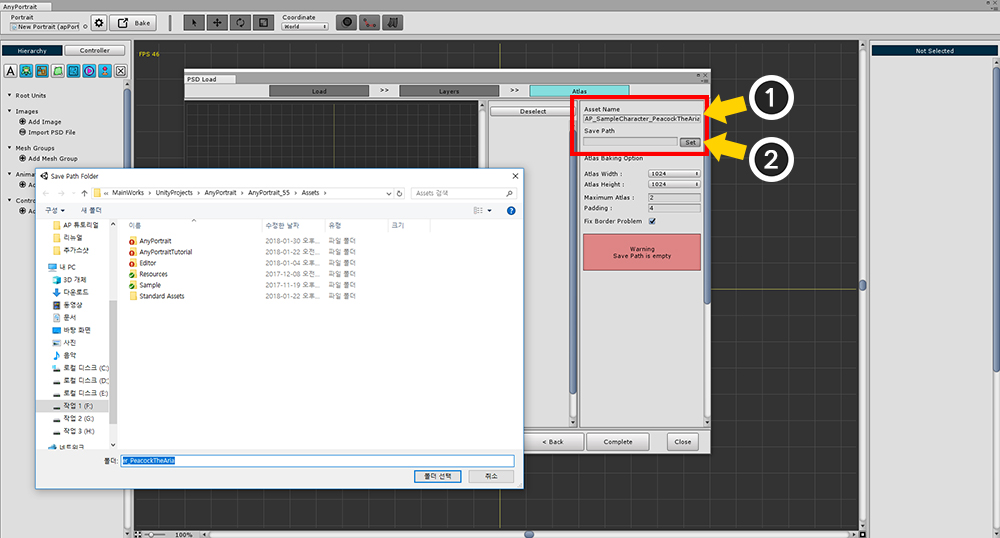
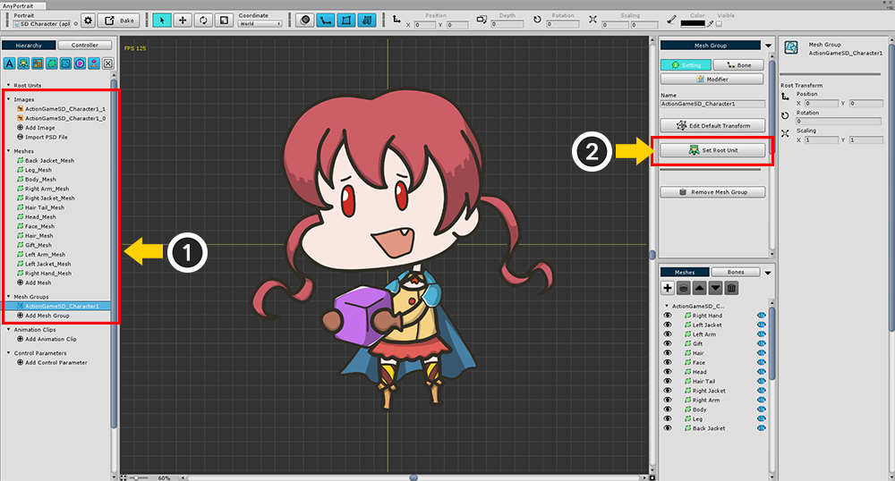
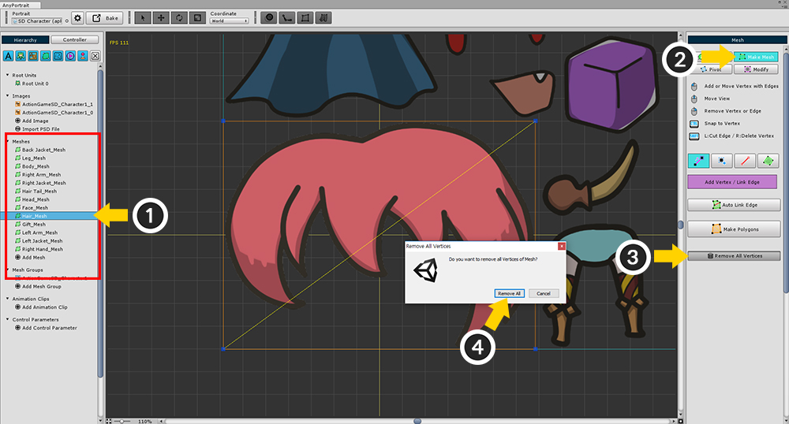
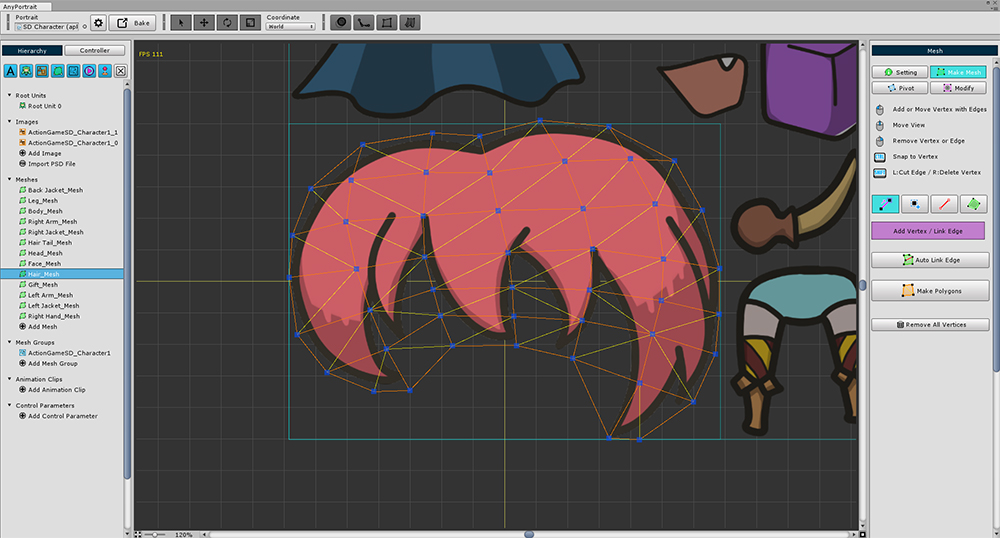

AnyPortrait > マニュアル > PSDファイルの読み込み
PSDファイルの読み込み
1.0.6

レイヤー情報を含むPSDファイルをインポートするには (1) 「Import PSD File」ボタンを押します。
「PSD Load」ダイアログが表示されたら、(2) 手順1で「Load PSD File」ボタンをクリックします。
PSDファイルが開いている場合は (3) 「Next」ボタンを押して次の手順に進みます。

ステップ2では、「Bake」したいレイヤーを選択し、クリッピングを設定することができます。
デフォルトでは、PSDファイルの設定に従い、フォルダ(グループ)を自動的に認識します。
(1) 選択したレイヤーのクリッピング設定と、それを Bakeに含めるかどうかを決定します。
すべての手順を完了したら、(2) 「Next」ボタンを押します。

ステップ3では、各レイヤ画像を複数の「Atlas」に結合する。
「Atlas」を作成する前に、(1) 「Atlas」の名前と (2) 「Texture Asset」として保存する 「Path」を指定します。
このプロセスが完了すると、「Bake Atlas」ボタンが表示されます。

Press the Bake button to create an Atlas.
「Bake」ボタンを押して 「Atlas」を作成します。
1. Asset Name : 「Atlas」の名前。 これは「Texture Asset」の名前になります。
2. Save Path : 「Texture Asset」を保存するパス。 これは、 「Assets」フォルダのサブフォルダに配置する必要があります。
3. Atlas Width / Height : 「Atlas」画像サイズ。
4. Maximum Atlas / Padding : Bakeされた「Atlas」の最大数と、各画像の間隔。
5. Fix Border Problem : イメージが拡大縮小されたときに透明度がゼロの場合に発生する可能性のある「Alpha Blending」の問題を解決します。
6. Bake Button : 現在の設定で 「Atlas」を作成します。
7. Atlas Information : 実際の画像からの縮小率と「Atlas」の数が表示されます。
8. Complete Button : バッチ処理された 「Atlas」を 「Texture Asset」として作成し、レイヤー情報を含むAnyPortraitにインポートします。
9. Atlas List : それは 「Baked Atlas」のリストです。 選択すると、プレビューウィンドウで詳細を表示できます。
10. プレビュー画面 : これは 「Atlas」をチェックする画面です。 マウスホイールボタンを使用して、ズームイン/ズームアウトすることができます。
11. Background Color : プレビュー画面の背景色。

「Bake」設定を変更すると、上記のように青色の「Atlas」情報ボックスが表示されます。
変更した 「Atlas」情報を確認し、 「Bake」ボタンを押して 「Atlas」を再度作成し、 「Complete」ボタンを押します。
Atlasの画像縮小率の決定
PSDで作成した画像をレイヤーに分割して「Atlas」に結合する場合、画像を縮小するしかありません。
イメージのサイズ変更を防ぐか、プロトタイプを可能な限り保持したい場合は、次のように設定します。
1.「Atlas Width, Height」を増やします。
2. 「Maximum Atlas」値を上げます。 (実際には、より小さな Atlasが作成されます。)
3.「Padding」を減らします。 （推奨しない）
上記のように設定しても必然的に画像が小さくなることがあります。
特定の画層の画像サイズが「Atlas Width, Height」より大きい場合、画像は100％未満に縮小されます。
ゲームに適したサイズのPSDファイルを使用することをお勧めします。
Set the size of the generated mesh group
1.0.6

v1.0.6以降、「Atlas」の設定が一部変更されました。
1. Atlas Bake Settings : 「Atlas」を作成するための設定です。
2. Mesh Group Scale Option : これは新しいオプションです。 実際のメッシュグループのサイズ比は、PSDファイルのサイズに基づいて設定できます。 100％で、PSDファイルのピクセル座標を使用します。 「Atlas」のズーム比には依存しません。
3. Bake button : 「Atlas」を作成します。
PSDで作られたキャラクターを修正

「Atlas」の画像とメッシュは、PSDファイルの設定に合わせて自動的に作成されました。
(1) 作成したメッシュグループを選択し、(2) 「Set Root Unit」ボタンを押し、「Root Unit」として登録します。

(1) 「Bake」ボタンを押す。(2) 「Bake」ダイアログで設定を確認し、シーンに 「Bake」する。

UnityにPSDイラストレーションと同じように適用されていることがわかります。

PSDをメッシュに変換すると、画像に関係なく正方形のメッシュとして作成されます。
(1) メッシュを選択します。
(2) 「Make Mesh」タブを選択します。
(3) 「Remove All Vertices」ボタンを押し、(4) 「Remove All」ボタンを押します。

画像に合わせて手動でメッシュを作成します。
これはすべてのメッシュに対して実行する必要があり、多くの時間と労力がかかります。